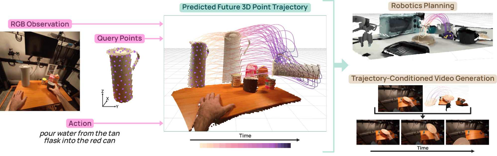
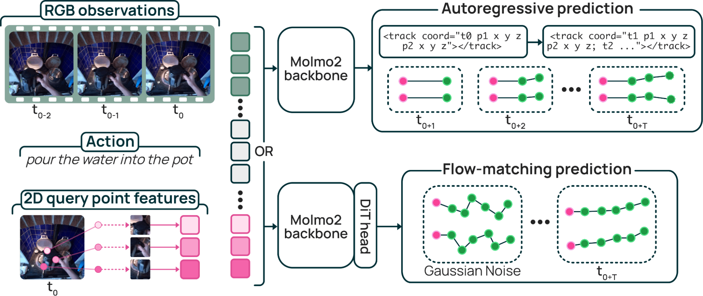
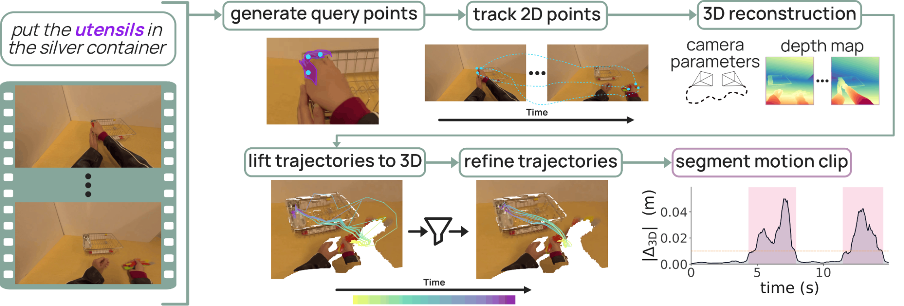
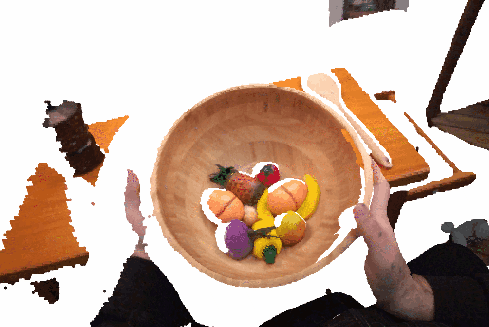
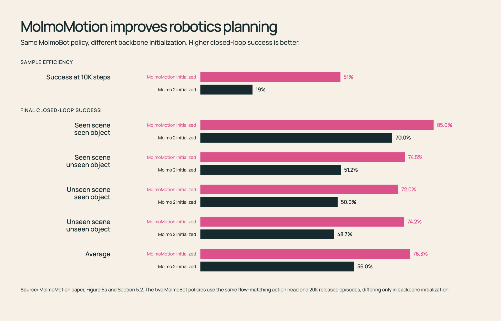

Machines have become remarkably good at perceiving motion. Given a video, modern models can estimate how objects and points move through a scene. But perception is inherently retrospective: it explains motion that has already happened. Many of the systems and applications we want to build need to look forward instead. A robot reaching for a cup has to anticipate how the cup will move before it touches it. A video generator has to know what realistic motion comes next if it's going to produce physically plausible frames. Predicting motion is harder than observing it, but it is also far more useful.
This idea became MolmoMotion, a new motion forecasting model we're releasing today. Given a video frame, 3D points marked on an object, and a sentence describing what's about to happen, MolmoMotion predicts where those points will move over the next few seconds in 3D space, achieving substantially stronger performance than existing forecasting methods.
We choose object attached 3D points in world space as our motion representation, because we believe a general motion representation needs three properties.
- it should be class-agnostic: not tied to templates for human bodies, hands, rigid objects, or any other fixed category.
- it should be view-stable: the same physical motion should be represented consistently across cameras and viewpoints.
- it should be directly usable by downstream systems that need to reason about physical motion.
Object-attached 3D points are the only representation that satisfy all three. A sparse set of surface points can describe rigid, articulated, or deformable motion without assuming the type of object being moved. Because the points live in a shared world frame, their trajectories remain stable across camera motion and viewpoint change. Unlike video generation, which spends much of its compute rendering appearance, lighting, and camera motion, 3D point trajectories isolate the physical motion we actually want to forecast. And because they are compact, explicit trajectories in 3D space, they can be passed directly to systems such as robot policies or video generation models.

Alongside the model, we're releasing MolmoMotion-1M, the largest collection of 3D point trajectories paired with action descriptions, drawn from 1.16M videos. We're also releasing PointMotionBench, a human-validated benchmark with 2720 clips.
We see MolmoMotion as a step toward AI systems that can reason not only about what is in the world, but also about what will happen next. Moreover, this motion prediction task turns out to be useful across a range of downstream tasks, from robot planning to controllable video generation. More broadly, we hope 3D motion forecasting becomes a foundation for building models that understand the physical world through motion. All the models and artifacts are open source for the community to study, deeply customize, and improve.
MolmoMotion Model
MolmoMotion uses Molmo 2 as its vision-language backbone, allowing it to connect language instructions to objects and points in the image. Given a short video history, an action description, and a set of query points with their initial 3D positions, the model first builds a shared understanding of what object is being referred to, where the points are, and what motion the instruction describes. It then predicts the future 3D trajectory of each point.
We train two variants of MolmoMotion:
- The autoregressive variant (MolmoMotion-AR) predicts future coordinates step by step. It represents 3D coordinates as structured text, following the coordinate-style prediction used by vision-language models, and writes out the future trajectory in temporal order. Because each new coordinate is conditioned on the trajectory already generated, this encourages smooth rollouts and gives the strongest accuracy when the future path is well-defined.
- The flow-matching variant (MolmoMotion-FM) predicts trajectories in continuous 3D space by transforming noise into motion, which makes it better suited for representing uncertainty when an instruction admits multiple plausible futures.

MolmoMotion-1M and PointMotionBench
To train MolmoMotion, we needed data that did not yet exist: large-scale videos with 3D point trajectories grounded to specific objects and paired with action descriptions. Existing 3D-track datasets were small and domain-limited, and while internet video had all the scale and diversity we wanted, it did not include 3D annotations. So we built an automatic pipeline that extracts object-grounded 3D trajectories from unconstrained video.
Given an input video and its action description, our annotation pipeline produces object-grounded 3D point trajectories in metric world coordinates. The pipeline figure provides an overview of the pipeline and illustrates each processing stage in detail. The challenging part is that raw tracks from unconstrained video are noisy, full of depth and tracking errors that leave points jittering and drifting, and objects can be static in most parts of video. To make the data trustworthy, we filter out points that do not move coherently with the rest of the object, smooth the remaining trajectories, and segment each clip to the window where the object actually moves.
The pipeline yields MolmoMotion-1M, the largest corpus of action-described, object-grounded 3D point trajectories assembled to date, spanning 736 motion types and 5,692 distinct objects.

To evaluate motion forecasting, we also built PointMotionBench, a human-validated benchmark of held-out 3D trajectories. It covers 2720 clips spanning 111 object categories and 61 motion types, including indoor manipulation, egocentric hand-object interaction, and outdoor dynamic scenes. With PointMotionBench, we can quantitatively evaluate whether a model's predicted 3D trajectories are close to the object's true future motion.
Experiments and Performance
We evaluate MolmoMotion in three settings. First, we test whether it can forecast future 3D point trajectories more accurately than existing motion prediction methods. Second, we evaluate whether the learned motion prior transfers to robot manipulation tasks. Third, we evaluate whether the learned motion prior transfers to controllable video generation.
3D motion forecasting
"Move and rotate wooden bowl with fruits on the table"


"Roll a lint roller on a blue cloth"


We first evaluate MolmoMotion's ability to predict motion in 3D space using PointMotionBench, comparing it against existing motion forecasting methods across diverse objects, scenes, and action types. MolmoMotion outperforms the methods we compare against, beating pixel-space video generators, parametric 3D methods, and simple constant-velocity extrapolation.
The qualitative results show the breadth of the model. MolmoMotion accurately forecasts different kinds of object motion across diverse scenes and action descriptions. In these examples, the predicted tracks stay close to the ground-truth trajectories, showing that the model is adapting its prediction to the object, scene, and intended action, rather than producing a generic motion pattern.
Downstream evaluation: robotics planning
"Take cloth out of container"

"Move lid on pot"

A useful motion prior should transfer across embodiments. A cup lifted by a human hand and a cup lifted by a robot gripper may involve very different actions, but the object itself can follow a similar path through 3D space. This makes MolmoMotion naturally useful for robotics, where the policy needs to reason about how objects should move.
The DROID visualizations show the same motion prior to transferring to real robot scenarios. After fine-tuning on DROID videos, MolmoMotion predicts coherent object trajectories across different objects, scenes, and manipulation instructions. The tracks follow the intended object motion, suggesting that the model's 3D motion prior adapts well to robot data.
The quantitative results tell the same story. We test this in both simulated and real robot settings. In simulation settings, a manipulation policy initialized from MolmoMotion reached 76.3% task success on pick-and-place versus 56.0% for a Molmo 2 baseline. It also learned faster, hitting 51% at 10K steps while the baseline was at 19%. In real robot settings, we fine-tuned MolmoMotion on real robot footage from DROID, and it reached the baseline's 12K-step error in roughly 2K steps.

Downstream evaluation: video generation
"A flamingo dips its beak into the water while walking to the right"
DaS + MolmoMotion

CogVideoX-5B

WAN-14B

"Take the round light brown plate from the table"
DaS + MolmoMotion

CogVideoX-5B

WAN-14B

MolmoMotion's predicted 3D trajectories can also guide video generation. Instead of asking an image-to-video model to infer motion only from text, we provide explicit future object trajectories as a motion-control signal.
The visual results show that this guidance makes the generated motion more faithful to the prompt and more physically plausible. Rather than only producing frames that look realistic in isolation, the video model follows an explicit path for how the object should move.
This improvement also appears in the metrics. When used with a track-conditioned video generator, MolmoMotion improves video quality over the base model across all five motion-related metrics we evaluate. It also outperforms a much larger image-to-video model on four of the five metrics. Qualitatively, MolmoMotion-guided generations show more physically plausible object motion and follow the prompted action more closely.

Release and what's next
MolmoMotion is a capable model, but there are still limitations to note. It uses 8 query points per object during training, enough to forecast a useful trajectory but not enough to densely represent surface geometry, which limits the model's handling of complex deformable motion.
Perception alone isn't enough. The harder and more valuable problem is forecasting: anticipating how the world will move before it moves. We think it's as fundamental to machine intelligence as recognizing what's already there, and until now there hasn't been a general way to do it. MolmoMotion is our answer, a general 3D motion prediction that works on any object, learned from ordinary video, and already the most accurate forecaster we know of. The applications will follow, in robotics, in video, and in places no one has mapped yet.
We encourage you to try MolmoMotion by downloading the weights, inspecting the training data, and evaluating our methods against PointMotionBench.